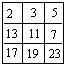

C++初等数论
1. 前言
数学知识的根基对学好编程至关重要。本文和大家讲讲在编程中要用到的数论知识。如同余式、欧拉定理和欧拉函数、费马小定理、威尔逊定理、裴蜀定理、模运算意义下的逆元、扩展欧几里得算法、孙子定理（中国剩余定理）。
除了理解数论概念，更重要能融会贯通。把对数论相关知识的认知运用到编程领域。
2. 同余式
概念
如果两个整数a,b 的差值除另一个整数(m)的值为一个整数，同称a,b对模m同余数。数学上记作：a≡b(mod m)，称为m的同余式。通俗讲，同余指a、b除以m的余数相同。如6、3除以3的余数都为0，则称6、3对模3同余数。
同余式的用途很广，如判断几个数字是不是偶数，可以求这几个数字的对模2的余数是不是为0，即同余相同。
如果a除以m的商为q1、余数为r，b除以m的商为q2、余数也是r。则a可以描述为：a=mq1+r；b可以描述为b=mq2+r。
满足：a≡b(mod m)<=>a-b=m(q1-q2)。
同余式的性质
- 相加性质：如果
a1≡b1(mod m),a2≡b2(mod m),……an≡bn(mod m)，则a1+a2+……+an≡(b1+b2+……bn)(mod m)。
举例说明：6、3对模3同余0；15、9对模3同余0；21,15对模3同余0。则6+15+21模3余数为0，3+9+15模3的余数为0。满足逐项相加性质。
- 逆运算性质：如果
a+b≡c(mod m)，则a=c-b(mod m)。
举例说明：如8+4和6模3的余数为0。则，8模3余数为2，6-4模3的余数为2。满足逆运算法则。
- 倍模相加或相减性质：如果存在
a≡b(mod m)，则式子a+km≡b(mod m)或者a-km≡b(mod m)成立。
举例说明：如12模3余数为0，9模3余数为0。则12+6和9模3同余(0)。12-6和9模3的同余(0)。
- 相乘性质：和相加性质类似，只需要把加法用乘法替换。如果
a1≡b1(mod m),a2≡b2(mod m),……an≡bn(mod m)，则a1*a2*……*an≡(b1*b2*……*bn)(mod m)。
举例说明：6、3对模3同余0；15、9对模3同余0；21,15对模3同余0。则6*15*21模3余数为0，3*9*15模3的余数为0。满足逐项相乘性质。
- 推广公式：
1
- 公约数性质
如果a≡b(mod m)，存在a,b的公约数和模互质，则a,b分别除以公约数后的两个数也同余。互质指如果两个整数只有公约数1，则称两数互质。
如27和21模2同余1，3是27和21的公约数，且和模2互质。则9和7模2同余1。
- 同余式的数和模乘上同一个整数同余式依然成立。如果
a≡b(mod m)则ak≡bk(mod mk)。
举例说明：4和8模2同余，则4*2和8*2模2*2同余。
- 同余式的数和模可以被它们任一公约数除。存在
a≡b(mod m)，如果a,b,m有公约数d，则a/d和b/d模m/d同余。即a=a1*d、b=b1*d、m=m1*d，则a1=b(mod m1)。
举例说明：8和16模4同余，且8,16,4有共同的公约数2，则4、8模2同余。
- 同余式对于模
m的任意约数相等的模d也成立。
举例说明：8和16模4同余，且2是模4的约数，则存在8和16模2同余。
- 如果同余式右边的数和模能被某个数除尽，则同余式的左边的数也能被此数除尽。即
a≡b(mod m),k|a,k|m,则k|b。
举例说明：12和8模4同余，且24能把8和4除尽，则24也能把12除尽。
- 同余式右边的数与模的最大公约数，等于另一边上的数与模的最大公约数。即
a≡b(mod m),则(a,m)=(b,m)。
余数判别法
基本思想：求N被m除的余数，先找到一个较简单的数R，使得N与R对于除数m同余．由于R是一个较简单的数，所以可以通过计算R被m除的余数来求得N被m除的余数。
⑴ 整数N被2或5除的余数等于N的个位数被2或5除的余数；如17被2和5除的余数为1和2，和个位数7被2、5除的余数相同。
⑵ 整数N被4或25除的余数等于N的末两位数4和25除的余数；
⑶ 整数N被8或125除的余数等于N的末三位数被8或125除的余数；
⑷ 整数N被3或9除的余数等于其各位数字之和被3或9除的余数；
⑸ 整数N被11除的余数等于N的奇数位数之和与偶数位数之和的差被11除的余数；（不够减的话先适当加11的倍数再减）；
⑹ 整数N被7，11或13除的余数等于先将整数N从个位起从右往左每三位分一节，奇数节的数之和与偶数节的数之和的差被7，11或13除的余数。
案例讲解
- 有一个整数，除
39,51,147所得的余数都是3，求这个数。
求出已知三个数的的最小公倍数，再加上余数就是所求的数。35、51、147的最小公倍数是
7×3×5×17×7=12495
所以这个整数是12495+3=12498。因为39，51，147的最小公倍数是32487，所以这个数最小是32487+3=32490 这个数还可以是32487×n+3（其中n为0以外的自然数）。
- 某个两位数加上
3后被3除余1，加上4后被4除余1，加上5后被5除余1，这个两位数是。 - 有一个自然数，除345和543所得的余数相同，且商相差33．求这个数是多少？
- 一个大于
10的自然数去除90、164后所得的两个余数的和等于这个自然数去除220后所得的余数，则这个自然数是多少？ - 现有糖果
254粒,饼干210块和桔子186个，某幼儿园大班人数超过40，每人分得一样多的糖果,一样多的饼干,也分得一样多的桔子。余下的糖果、饼干和桔子的数量的比是：1：3：2，这个大班有多少名小朋友，每人分得糖果多少粒，饼干多少块，桔子多少个。 - 有一个大于·1·的整数，除
45、59、101所得的余数相同，求这个数。 - 有一个整数，除
300、262、205得到相同的余数。问这个整数是几? - 在除
13511，13903及14589时能剩下相同余数的最大整数是? 140，225，293被某大于1的自然数除，所得余数都相同。2002除以这个自然数的余数是多少 ?- 三个数：
23，51，72，各除以大于1的同一个自然数，得到同一个余数，则这个除数是多少 ？ - 学校新买来
118个乒乓球，67个乒乓球拍和33个乒乓球网，如果将这三种物品平分给每个班级，那么这三种物品剩下的数量相同，请问学校共有多少个班？ - 若
2836，4582，5164，6522四个自然数都被同一个自然数相除，所得余数相同且为两位数，除数和余数的和为多少？ - 一个大于
1的数去除290，235，200时，得余数分别为a,a+2,a+5，则这个自然数是多少？ - 有
3个吉利数888，518，666，用它们分别除以同一个自然数，所得的余数依次为a,a+7,a+10，则这个自然数是。 - 一个自然数除
429、791、500所得的余数分别是a+5，2a,a求这个自然数和a的值。 - 甲、乙、丙三数分别为
603，939，393．某数A除甲数所得余数是A除乙数所得余数的2倍，A除乙数所得余数是A除丙数所得余数的2倍．求A等于多少？ - 已知
60，154，200被某自然数除所得的余数分别是a-1、a^2、a^3-1，求该自然数的值。 - 三个不同的自然数的和为
2001，它们分别除以19,23,31所得的商相同，所得的余数也相同，这三个数是分别是？ - 在
3×3的方格表中已如右图填入了9个质数。将表中同一行或同一列的3个数加上相同的自然数称为一次操作。问：你能通过若干次操作使得表中9个数都变为相同的数吗？为什么？

图片- 一个三位数除以
17和19都有余数，并且除以17后所得的商与余数的和等于它除以19后所得到的商与余数的和．那么这样的三位数中最大数是多少，最小数是多少？ - 从
1，2，3，……，n中，任取57个数，使这57个数必有两个数的差为13，则n的最大值为多少？
3. 欧拉定理
先理解欧拉函数的概念。讲解欧拉函数前，需要了解与之相关的另几个概念。
同余类：如果两个整数除以同一个正整数的余数相同，则认为此两个整数为同余关系。同余关系是数论中的一种等价关系。数学上使用符号≡表示。同余类指模 m同余的所有整数的集合称为同余类。如所有偶数模2的余数都为0，可称所有偶数为同余类。剩余类是同余类的另一种叫法。
完全剩余系，简称完系。
在模m的m个同余类A0,A1,A2……Am-1中，现分别从每一类中取一个数a0,a1,a2……am-1所组成的数列称为模m的一个完全剩余系（简系）。
如所有整数模3的余数有0,1,2。根据整数模3的余数的不同可以把所有整数分为3个同余类。如0,3,6,9,12……模3余数为0，则数列称为一个同余类。1,4,7,10……为一个同余类，2,5,8,11……为一个同余类。
从3个同余类中分别取一个整数，如0,1,2……就是一个简系。由0,1,2,……m-1构成的简系，也称为模m的最小非负完系。
什么是欧拉函数？
数论中，对正整数m，欧拉函数是小于或等于m的正整数中与m互质的数的数目。数学上以称欧拉函数或欧拉商数，使用符号φ表示φ(m)=s。如φ(8)=4。因为小于等于8的正整数中与其互质的有1,3,5,7。
欧拉函数为乘性函数（积性函数）
定义1：如果函数f对任意两个互质的正整数n,m，均有 f(mn)=f(m)*f(n)为为乘性函数（积性函数)；
定义2：如果函数f对任意两个正整数n,m，均有f(mn)=f(m)*f(n)就称f为完全乘性函数（完全积性函a数)；
欧拉函数的性质：
-
当
m=1时，φ(1)=1。 -
当
m>1时，φ(m)就是是1,2……m-1即模m正整数完全剩余系中与m互质的个数。 -
如果
m为质数，则φ(m)=m-1。如，当m=7时，其正整数(不包含0)剩余系为1,2,3,4,5,6,7，与7互质的为1,2,3,4,5,6，素数m的质因数有1和它本身，m和m不互质。即φ(7)=6。 -
如果
m为某一个素数p的幂次，那么φ(pa)=(p-1)*p(a-1)。
如：9=32，套用公式，(3-1)*32-1=6。模9的简系为1,2,3,4,5,6,7,8其中1,2,4,5,7,8与9互质，共有6个。
-
如果
m为任意两个数a和b的积，那么φ(a*b)=φ(a)*φ(b)。 -
设
n=(p1^a1)*(p2^a2)*……*(pk^ak)(为N的分解式)， 那么φ(n)=n*(1-1/p1)*(1-1/p2)*……*(1-1/pk)
欧拉定理
a(φ(m)) ≡1 ( mod m) (a与m互质)。
通式求欧拉函数
#include <iostream>
#include <bits/stdc++.h>
using namespace std;
typedef long long ll;
ll oula(ll n){
ll ans=n;
for(int i=2;i*i<=n;i++){
if(n%i==0) {
ans=ans-ans/i;//欧拉函数通式
while(n%i==0){//消除i因子
n/=i;
}
}
}
cout<<n<<endl;
if(n>1) ans=ans-ans/n;//n>1,说明存在一个素因子没除，例如46；
return ans;
}
int main()
{
ll n;
scanf("%lld",&n);
ll ans=oula(n);
cout<<ans<<endl;
return 0;
}
一种筛选方法
#include <iostream>
#include <bits/stdc++.h>
using namespace std;
typedef long long ll;
const int maxn=1e6+10;
ll phi[maxn];
void getoula(ll n){
for(int i=2;i<=n;i++){
phi[i]=0;
}
phi[1]=1;
for(int i=2;i<=n;i++){
if(!phi[i]){
for(int j=i;j<=n;j+=i){
if(!phi[i]) phi[j]=j;
phi[j]=phi[j]/i*(i-1);
}
}
}
}
int main()
{
ll n;
scanf("%lld",&n);
ll ans=oula(n);
cout<<ans<<endl;
return 0;
}
欧拉函数的线性筛法
有以下三条性质：
- φ(p)=p-1
- φ
(p*i)=p*φ(i)（当p%i==0时） - φ
(p*i)=(p-1)*φ(i)(当p%i!=0时)
#include <iostream>
#include <bits/stdc++.h>
using namespace std;
typedef long long ll;
const int maxn=1e6+10;
ll phi[maxn];
ll prime[maxn];
bool v[maxn];
int x;
void getphi(int n){
phi[1]=1;
for(int i=2;i<=n;i++){
if(!v[i]){
prime[x++]=i;
phi[i]=i-1;
}
for(int j=0;j<x;j++){
if(i*prime[j]>n){
break;
}
v[i*prime[j]]=true;
if(i%prime[j]==0){
phi[i*prime[j]]=phi[i]*prime[j];
break;
}
else {
phi[i*prime[j]]=phi[i]*phi[prime[j]];
}
}
}
}
int main()
{
ll n;
scanf("%lld",&n);
getphi(n);
for(int i=1;i<=n;i++){
cout<<phi[i]<<endl;
}
return 0;
}
4. 费马小定理
如果p是一个质数，而整数a不是p的倍数，则有a （p-1）≡1（mod p）。
若a，b，c为任意3个整数,m为正整数，且(m,c)=1，则当a·c≡b·c(mod m)时，有a≡b(mod m)。
设m是一个整数且m>1，b是一个整数且(m,b)=1。如果a[1],a[2],a[3],a[4],…a[m]是模m的一个完全剩余系，则b·a[1],b·a[2],b·a[3],b·a[4],…b·a[m]也构成模m的一个完全剩余系。
5. 威尔逊定理
威尔逊定理的定义为：任一素数减去1的阶乘与-1模该素数同余。
威尔逊定理可用数学语言表示为：对任何素数，都有(p-1)!+1≡0(mod p)
6. 裴蜀定理
裴蜀定理（或贝祖定理）得名于法国数学家艾蒂安·裴蜀，说明了对任何整数a、b和它们的最大公约数d，关于未知数x和y的线性不定方程（称为裴蜀等式）：若a,b是整数,且gcd(a,b)=d，那么对于任意的整数x,y,ax+by都一定是d的倍数，特别地，一定存在整数x,y，使ax+by=d成立。它的一个重要推论是：a,b互质的充分必要条件是存在整数x,y使ax+by=1.
n个整数间的裴蜀定理播报编辑设a1,a2,a3......an为n个整数，d是它们的最大公约数，那么存在整数x1......xn使得x1a1+x2a2+...xnan=d。特别来说，如果a1...an存在任意两个数是互质的（不必满足两两互质），那么存在整数x1......xn使得x1a1+x2a2+...xnan=1。证法类似两个数的情况。
7.模运算意义下的逆元
- 在信息学竞赛中，当答案过于庞大的时候，我们经常会使用到模运算(Modulo Operation)来缩小答案的范围，以便输出计算得出的答案。
给定一个正整数 p，任意一个整数 n，那么一定存在等式：
n = k * p + r；
其中k、r 是整数，且0 ≤ r < p，则称 k 为 n 除以 p 的商，r 为 n 除以 p 的余数。
对于正整数 p 和正整数 a、b，定义如下运算：
取模运算 ： a % p (或 a mod p)，表示 a 除以 p 的余数。 模 p 加法：(a + b) % p，其结果是 a + b 算术和除以 p 的余数。 模 p 减法：(a - b) % p，其结果是 a - b 算术差除以 p 的余数。 模 p 乘法：(a * b) % p，其结果是 a * b 算数积除以 p 的余数。 同余式：正整数 a、b 对 p 取模，他们的余数相同，记做 a ≡ b (mod p)。 说明：
n % p 得到结果的正负由被除数 n 决定，与 p 无关。
例如：7 % 4 = 3, -7 % 4 = -3, -7 % -4 = -3.
8. 扩展欧几里得算法
扩展欧几里得算法（英语：Extended Euclidean algorithm）是欧几里得算法（又叫辗转相除法）的扩展。已知整数a、b，扩展欧几里得算法可以在求得a、b的最大公约数的同时，能找到整数x、y（其中一个很可能是负数），使它们满足贝祖等式 ax+by=gcd(a,b)
如果a是负数，可以把问题转化成， |a|(-x) +by=gcd(|a|,b) 然后令x'=(-x)。 通常谈到最大公约数时，我们都会提到一个非常基本的事实：给予二个整数a、b，必存在整数x、y使得ax + by = gcd(a,b)。 有两个数a,b，对它们进行辗转相除法，可得它们的最大公约数——这是众所周知的。然后，收集辗转相除法中产生的式子，倒回去，可以得到ax+by=gcd(a,b)的整数解。 扩展欧几里得算法可以用来计算模反元素(也叫模逆元)，而模反元素在RSA加密算法中有举足轻重的地位。
9.孙子定理（中国剩余定理）
孙子定理是中国古代求解一次同余式组（见同余）的方法。是数论中一个重要定理。又称中国余数定理。一元线性同余方程组问题最早可见于中国南北朝时期（公元5世纪）的数学著作《孙子算经》卷下第二十六题，叫做“物不知数”问题，原文如下：有物不知其数，三三数之剩二，五五数之剩三，七七数之剩二。问物几何？即，一个整数除以三余二，除以五余三，除以七余二，求这个整数。《孙子算经》中首次提到了同余方程组问题，以及以上具体问题的解法，因此在中文数学文献中也会将中国剩余定理称为孙子定理。